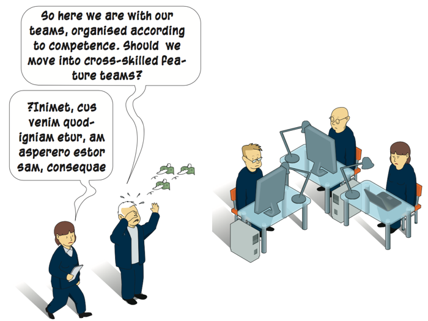

Scaling agile in five minutes
PDF version of Scaling Agile in 5 minutes
Basement Apps Ltd
having unexpected success with a social media app for musicians.

Software Supply Ltd
needs more diverse development teams as the company enters the IoT market.

GigaMeg Corporation
has introduced a breakthrough technology for mobile antennas and intend to make huge profit before the competition catches up.

With success in business, growing pains arrive. Organisations run- ning Lean & Agile are no exception.
The nature of the growing pains can be very different, depending on the kind of company and the nature of the growth. For some enterprises, it’s about expanding ambitions, e.g. business visions or product scopes. For others, it’s about expanding operations, e.g. volumes of sales or staff. In any of these instances, the organisation and methods must be adapted and scaled.
As challenging as this may seem, situations like the ones described above are actually great opportunities for agile transformation – to implement new methodology and to extend the culture within the organisation!
THE BASIC CONCEPTS OF SCALING AGILE
What is Scaling Agile?
Here, we use a very broad de nition of the concept Scaling Agile. To us, it includes all processes where an organisation is ”doing things more agile than before”. In addition, we don’t consider this as a process which takes place as the company slowly evolves. Instead, Scaling Agile is about getting started here and now, according to the present conditions and limitations. Sometimes it means radical changes of how things are being done. Most oftenly, it is only engaging a minor part of the company during the rst phase. But as more staff is included and the culture matures, the scaling speeds up.
Different types of scaling
The scaling challenge may be very different for various types of companies. Here are some typical cases.
The small, innovation-driven company ...
The mature mid-size company offering many services...
The big, global corporation with many people involved ...
The starting point of scaling: a good look in the mirror
Succesful scaling is based on structured analysis, which in its turn is based on careful and open-minded observation. To get an overview of the current state, the factors in the table may be considered:
- Your current state
- What is your product or service?
- SW products to market
- SW + HW, Internet of things
- How is the SW delivered – as a permanent license or as a subscription? IT to support business
- Is the system business critical?
- Size/co-location
- How does the software architecture and the infrastructure look?
- What’s the level of agile maturity?
- How big is your budget?
The use of a tool, like a Scaling Canvas (see page #), not only makes it easier to think – it also makes it harder to deny that there are problems present. The rst step of all change processes is insight. All insights don’t have to be pleasant to lead to fruitful results – quite the opposite!
The guiding lights for change: the prioritized Business Drivers
The guiding lights of the scaling process should be the prioritized business drivers. In the Softhouse model, we have de ned seven but your mileage may vary. We recommend that the organisation picks three. It is not always easy to let go of the other ve so this part may trigger a discussion about the mission and business strategies of the entire organisatoin.
THE SOFTHOUSE SCALING AGILE MODEL, OVERVIEW
It is a great challenge to apply lean & agile frameworks like Kanban and Scrum in new con gurations and across several teams. The theory behind the different frameworks have often been described and developed from the perspective of individual teams. The communication has been based on informal contacts and short distances between the co-workers.
To deal with these challenges, a multitude of methodologies for scaling Agile has been suggested: SAFe, DAD, LESS, Scaled Professional Scrum and several others (see page 14). To handle and understand these methodologies, we have introduce the Softhouse Scaling Agile Model. It is based upon three dimensions:

Size
is the number of people and teams involved within a value stream.
Example of scaling challenge: In Company Gamma, the demand for new functionality increases
for a product or service. An op- portunity arises to increase the market share, either by increasing
the number of staff within a team or the number of teams.
Offerings
are the products and services marketed by the organisation. The tool handles each offering as an individual value stream, producing an self- contained product or service (including enabler and consumer) that can be released indepen- dently of each other.
Example of scaling challenge: Company Beta1 develops new products and de ne new business segments. There is a transition go- ing on from being a product-focused enterprise to a service-focused business.
Example of scaling challenge: Company Beta2 has a big monolithic product that has grown over the years. Every new release takes longer and longer time and involves more and more people to manage dependencies. A new architecture is de ned to allow more independent development and releases.
Value stream
is the concept-to-cash value stream ow. This represents all activities and steps from an identifed business need until we have the revenue in our hand.
Example of scaling challenge: Company Gamma wants to transform the entire value stream according to Agile methodology. This in- cludes not only the developer teams but also marketing, integration and operations.
THE SOFTHOUSE SCALING AGILE MODEL, DETAILS
More about the three dimensions
SIZE

Definition
- Huge product with several MORE ABOUT THE THREE DIMENSIONS dependencies
- Planning, visualization and collaboration on several levels
- Go-live is considered to be very complicated and expensive
Challenges
- Continuous Delivery
- Governance
- Legacy
- Lots of people, often vendors
OFFERINGS
Definition
- Separated value streams with independent deliveries
- Distributed governance
- Lightweight Portfolio Management
Homebase
- (Small and) medium sized
- Product leadership
Challenges
- Continuous Delivery
- Architecture allowing pipelines
- Governance/funding
- KPIs—Value rather than Cost
VALUE STREAM

Definition
- Continuous delivery of value
- End-to-end value stream collaboration
- Minimum viable product (MVP)
Homebase
- Small (and medium) sized - Co-located
- Product leadership
Challenges
- Continuous Delivery
- Get Business/POs in the flow
- Get instant feedback from Customer/Market
AGILE CULTURE AND BEHAVIOURS
Agile scaling is not only about how things are organized. In addition, it requires that all staff—developers, project leaders, managers etc.— embrace agile culture and agile behaviours.
Process and management is just one of four pieces in the jigsaw puzzle. Agile processes will not work without the right mindset, the right culture and the right behaviour, all of which promote and encourage cooperation and openness. Here are some examples of principles that should shape the mindset:
Cooperation over individual performance
Agile is based upon professional cooperation and a holistic approach to the outcome. This is a contrast to older philosophies which are more focused on individual performance and split responsibility. A conflict between the old and the new may arise; this must be resolved in some way.
Continuous improvement and growth
Agile challenges the teams and their members to become a little better at what they do every day—a culture based on “inspect & adapt”.
"The information is not in the house"
The world is changing—fast and unpredictably—and there is little time for individuals to build expert skills. By keeping up a dialogue with stakeholders and end users the developers get the knowledge and insights they need to keep up the pace.
The process brings about changes
**A scaling agile process always introduces new roles, processes and ways-of-working, even for organizations that are not new to agile methodology.
Cross-functional teams
Forming cross-functional teams represents a big change. New Line Managers need coaching skills to build and grow these teams, instead of just being experts on the subject matter.
Professional roles
The creation and modification of professional roles requires attention and discussion. Roles like Product Owners will be formed. The roles of Line Managers and Project Managers will be filled with new content.
A steady flow
Continuous integration and delivery will be a necessary capability in order to get prompt feedback on content and quality as well as getting a steady flow of delivered value.
One of the biggest challenges is to change the mindset of leadership and governance. Firstly, to go from command & control to trust. Secondly to put the focus on getting things done, not just getting them started. All governance processes must be based on a basic Lean understanding of queueing theory and theory of constraints. Important principles are ”pull is better than push” and the limitation of work-in-progress in order to increase throughput.

TWO TOOLS TO HELP YOU GETTING STARTED
To get started with the scaling process, the organization needs to agree on three things:
- Drivers: What is the desired outcome?
- Current: Where are you now?
- Wanted: Where you want to go?
Here we present two recommended tools: one for finding out what changes have to be done and one for executing these changes.
Scaling Canvas
The Scaling Canvas supports the analysis, gives overview and lays the foundation for the scaling process. Here we use a type developed by the Scalare project (see last page).
The Scaling Canvas, based on a whiteboard and post-it notes, can be used to build the first version of a Change Backlog. In this way, we prepare for a more effective communication and an alignment process during which the organization forms a common understanding of where we are going and what approach we are taking.
Typical things that might end up in the Change Backlog could be:
- A training program which helps the participants understand what is expected from them and what their role is in the bigger picture.
- Initiatives for making sure that the architecture will enable the product to perform what is needed
- Automated testing improvements
- Collaboration between different departments within the company
- Market research for a new product
- Going from traditional business models selling HW products to providing subscriptions on software features
Agile Change Center
The Agile Change Center, developed by Softhouse, is a structure to manage the change process in an agile way, using a Change Backlog.
The Agile Change Center uses the outcome from the Scaling Canvas (or a similar analysis) as a road map for change. On the initiative of a Change Owner, and with the help of a Change Team, the items from the canvas are broken down into activities. During the execution of an item, the change team will request input from the organization. They will then roll it out in order to receive new feedback on how it is working. By having this Scaling Canvas visual in the office, both management and the organization will be able to see the current status of the change at any time.
The Agile Change Center is based on
- Short change iterations
- Visualization of progress
- Elimination of impediments
- Focus on value
- Engaged staff, open for change
Management Team Characteristics within a domain Characteristics within a domain Drivers Ability P attern Transformation Inability, growing plan Change area Warning note (Anti pattern)
SOME POPULAR FRAMEWORKS
“Wherever you're starting from, realize that your effort to scale agile needs to be agile itself.”
-- Dan Radigan, Atlassian
The Scaling Agile Model presented in this brochure is a useful tool for understanding and handling different frameworks for agile scaling. Here we present some well-known examples.
Scrum of Scrums (not recommended)
The Scrum of Scrums scaling process comes very naturally: one Scrum team becomes two, becomes three and so on and early in the process, the need to coordinate the teams arises. This is achieved in the simplest way possible by having a multi-team stand-up daily meeting which is attended by one member from each individual Scrum team. Scrum of scrums is much of an improvisation; it is severely limited, includes no documentation and the multi-team stand-up has a tendency to become a status meeting.
LeSS (Large-scale Scrum )
Large-Scale Scrum (LeSS) is Scrum—It is not “new and improved Scrum.” Rather, LeSS is about figuring out how to apply the principles, elements, and purpose of Scrum in a large-scale context. Large-Scale Scrum has two frameworks:
- LeSS (basic) framework is for 2–‘8’ teams with one overall Product Owner (PO) who truly “owns the product” for one real shippable product worked on by all the teams in one Sprint.
- LeSS Huge for ‘8+’ teams, up to a few thousand people per product. With this size you don’t divide by function or architecture; you divide around major areas of customer concerns called requirement areas.
LeSS emphasizes continuous learning, inspection, and adaptation about both product and processes, there are no “one size fits all” organization and process recipes. History, terminology and mindset for LeSS comes from complex R&D development.
Disciplined Agile Delivery (DAD)
The Disciplined Agile Delivery (DAD) process decision framework is a people-first, learning-oriented hybrid agile approach to IT solution delivery. The DAD framework is not as end-state-focused as SAFe can be seen as, hence the idea is that you will not know what end-state you want to reach before you are actually in the environment and phasing the issues and problems that you discover.
DAD is a hybrid approach, which extends Scrum with other proven agile strategies and concepts. DAD extends the construction-focused lifecycle of Scrum to address the full, end-to-end delivery lifecycle from project initiation all the way to delivering the solution to its end users. DAD includes advice about different practices. But, instead of the prescriptive approach seen in other agile methods, the DAD framework takes a goals-driven approach. Historically, DAD has it’s origin in large scale IT- development supporting a business.
Scaled Agile Framework (SAFe)
SAFe introduces a layered governance structure. This includes development teams using Scrum or Kanban on the lowest level, pulling Stories from a hierarchy of backlogs managed on Program (Features) and Portfolio (Epics) level. The Program level introduces the concept of Agile Release Trains (ARTs) that is a number of dev teams (max 100+ people) that together pull and plan work from the Program Backlog. ARTs plan and deliver Program Increments (PIs) with a time box of 10–12 weeks. Planning is done as Big-Room-Planning events. During these, all stakeholders (business, product owners, architects, developers, testers etc.) spend two full days to come up with a Program Board. This shows all dependencies and what can be expected to be demoed every second week by each team, and by all teams together in system demos.
Scaling Agile is a very different challenge for different organizations. In this brochure, we introduce an universal model which may be used together with well-known frameworks like LeSS, DAD and SAFe.
Made in cooperation with Scalare is a European ITEA2 (Information Technology for European Advancement) project in which a network of companies, organizations and universities cooperate to assist European industries scaling their software capability. The expected outcome from Scalare is a Scaling Management Framework that provides guidance for different approaches for scaling. www.scalare.org
Softhouse Consulting
Karlskrona
Campus Gräsvik 3A
SE-371 75 Karlskrona
Phone: +46 455 61 87 00
info.karlskrona@softhouse.se
Växjö
Willans Park 3
SE-352 30 Växjö
Phone: +46 455 61 87 00
info.vaxjo@softhouse.se
Sarajevo
Džemala Bijedica 185
BA-71 000 Sarajevo
Phone: +387 64 42 > 79 847
info.bosnia@softhouse.se
www.softhouse.se
Stockholm
Tegnérgatan 37
SE-111 61 Stockholm
Phone: +46 8 410 929 50
info.stockholm@softhouse.se
Göteborg
Magasinsgatan 20
SE-411 20 Göteborg
Phone: +46 31 760 99 00
info.goteborg@softhouse.se
Malmö
Stormgatan 14
SE-211 20 Malmö
Phone: +46 40 664 39 00
info.malmo@softhouse.se